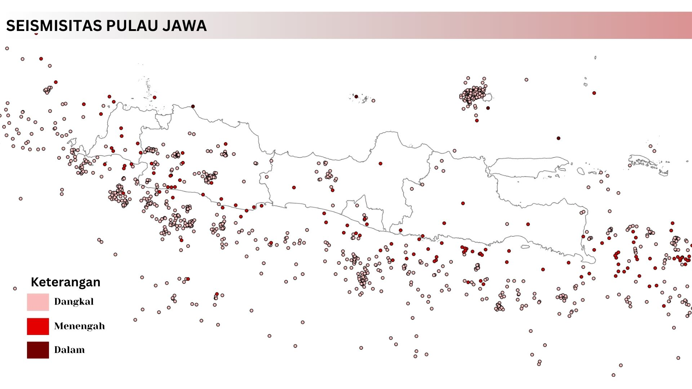

Potensi Megathrust di Pulau Jawa
Melihat potensi megathrust melalui seismisitas Pulau Jawa.

Megathrust terdiri atas dua istilah, yaitu "mega" dan "thrust." Istilah "mega," yang berasal dari Bahasa Yunani, berarti besar atau luar biasa besar, sedangkan "thrust," yang berasal dari Bahasa Inggris, merujuk pada dorongan atau tekanan. Dalam konteks geologi, "thrust" mengacu pada tekanan besar yang dihasilkan oleh sesar di zona subduksi, yang dapat menyebabkan pergeseran lempeng. Pergeseran ini terjadi akibat akumulasi energi tektonik di area pertemuan lempeng, di mana salah satu lempeng menunjam ke bawah lempeng lainnya. Pergeseran lempeng tersebut sering kali melepaskan energi dalam bentuk gempa bumi dengan magnitudo yang sangat besar.
Saat ini, isu terkait gempa megathrust menjadi salah satu perbincangan hangat di kalangan masyarakat. Hal ini dipicu oleh peringatan terbaru yang dikeluarkan oleh Badan Meteorologi, Klimatologi, dan Geofisika (BMKG) terkait potensi fenomena tersebut. Isu megathrust sebenarnya bukanlah hal baru, tetapi kembali diangkat untuk mengingatkan semua pihak untuk bersiap dan mengambil tindakan mitigasi. Munculnya peringatan ini berkaca dari terjadinya Megathrust di Nankai, Jepang Selatan pada 8 Agustus 2024. Sejatinya tidak ada keterkaitan antara kejadian Megathrust di Jepang dengan Indonesia, tetapi mengingat Indonesia memiliki dua zona subduksi di Selat Sunda dan Mentawai-Siberut menjadikan adanya kekhawatiran akan potensi terjadinya gempa serupa.
Peta di atas merupakan sebaran seismisitas di Pulau Jawa yang menggambarkan histori kejadian gempa di wilayah ini. Peta tersebut menunjukkan lokasi episentrum gempa berdasarkan kedalaman, yang dibagi menjadi dangkal, menengah, dan dalam. Sebaran episentrum yang terkonsentrasi di wilayah selatan Pulau Jawa menunjukkan adanya aktivitas tektonik yang intens di zona subduksi, di mana lempeng Indo-Australia menunjam ke bawah lempeng Eurasia. Hal ini menjadikan wilayah tersebut sangat rawan terhadap gempa bumi, termasuk potensi gempa megathrust yang dapat memicu tsunami. Melalui peta ini dapat dipahami bagaimana pola dan aktivitas gempa di Pulau Jawa terutama pada zona subduksi. Melalui sebaran ini diharapkan semua pihak dapat melakukan mitigasi sedini mungkin sehingga dampak dari gempa megathrust dapat diminimalkan.
Sumber
- RRI, Ini Deretan Gempa Megathrust yang Tercatat dalam Sejarah
- Fakultas Hukum UMSU, Apa Itu Gempa Megathrust? Berikut Ini Penjelasannya
- Detik Edu, Apa Itu Gempa Megathrust? Ini Pengertian dan Potensinya di Indonesia
- CNBC Indonesia, Gempa Megathrust Tinggal Tunggu Waktu, Ini 13 Wilayah Paling Rawan
- CNBC Indonesia, BMKG Sebut Gempa Megathrust RI Hanya Tunggu Waktu, Ini Zona Merahnya
- CNBC Indonesia, Penjelasan BMKG soal Kapan Megathrust Selat Sunda–Mentawai-Siberut